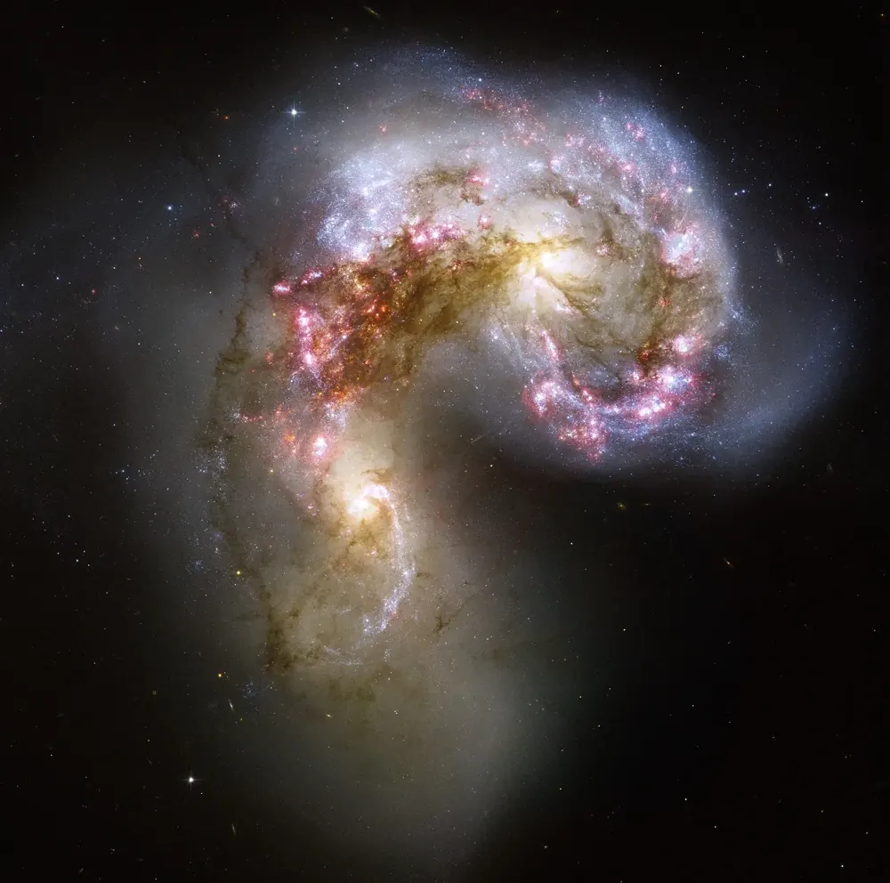
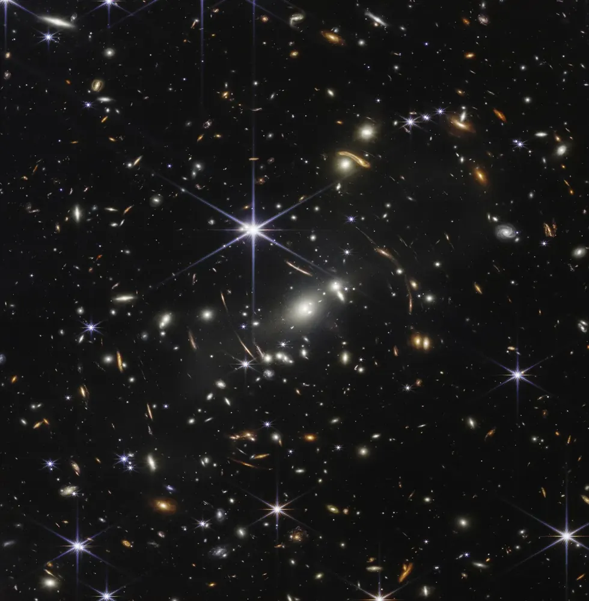

← GalaxiesGalaxiesGalaxiasGaláxiasGalaxiesالمجرات
Formation and collisionsबनना और टकरानाFormación y colisionesFormação e colisõesFormation et collisionsالتكوّن والتصادمات
Galaxies were not born big. They grew, mostly by merging.Galaxies बड़ी पैदा नहीं हुईं। वे बढ़ीं, ज़्यादातर आपस में मिलकर।Las galaxias no nacieron grandes. Crecieron, sobre todo fusionándose.As galáxias não nasceram grandes. Elas cresceram, principalmente por fusões.Les galaxies ne sont pas nées grandes. Elles ont grandi, surtout par fusion.لم تولد المجرات كبيرة. لقد نمت، غالبًا بالاندماج.

📷 NASA, ESA and The Hubble Heritage Team (STScI/AURA) · Public domain

📷 NASA, ESA, CSA and STScI · Public domain
The first onesपहली galaxiesLas primerasAs primeirasLes premièresالمجرات الأولى
After the Big Bang, about 13.8 billion years ago, the universe was a nearly smooth mix of gas and dark matter. Slightly denser spots pulled in more matter. Gas fell into them and the first stars lit up a few hundred million years later.लगभग 13.8 अरब साल पहले Big Bang के बाद ब्रह्मांड गैस और dark matter का लगभग चिकना मिश्रण था। थोड़े घने स्थानों ने और द्रव्य खींचा। उनमें गैस गिरी और कुछ सौ मिलियन साल बाद पहले तारे जल उठे।
The James Webb Space Telescope has found galaxies that existed only about 300 million years after the Big Bang. Some are brighter and more developed than expected, and astronomers are still working out why.James Webb Space Telescope ने ऐसी galaxies पाई हैं जो Big Bang के सिर्फ़ लगभग 30 करोड़ साल बाद मौजूद थीं। कुछ उम्मीद से ज़्यादा चमकीली और विकसित हैं, और खगोलविद अब भी समझ रहे हैं कि ऐसा क्यों।
Growing by mergingमिलकर बढ़नाCrecer fusionándoseCrescendo por fusõesGrandir par fusionالنمو بالاندماج
Small galaxies fall into bigger ones. The Milky Way is still swallowing the Sagittarius Dwarf Galaxy, and streams of stars from earlier meals wrap around it. A bigger meal, a galaxy called Gaia-Enceladus, merged with us about 10 billion years ago.छोटी galaxies बड़ी में गिरती हैं। आकाशगंगा अब भी Sagittarius Dwarf Galaxy को निगल रही है, और पहले के शिकारों के तारों की धाराएँ उसके चारों ओर लिपटी हैं। और बड़ा शिकार, Gaia-Enceladus नाम की galaxy, लगभग 10 अरब साल पहले हमसे मिली।
What a collision looks likeटक्कर कैसी दिखती हैCómo es una colisiónComo é uma colisãoÀ quoi ressemble une collisionكيف يبدو الاصطدام
Two galaxies passing through each other is slow, over hundreds of millions of years. Stars rarely collide, but gas clouds do. They are squeezed and a burst of new stars forms, called a starburst. The Antennae Galaxies, roughly 45 to 70 million light-years away, are two galaxies in the middle of this.दो galaxies का एक-दूसरे से गुज़रना धीमा होता है, सैकड़ों मिलियन साल में। तारे शायद ही टकराते हैं, पर गैस के बादल टकराते हैं। वे दबते हैं और नए तारों की बौछार बनती है, जिसे starburst कहते हैं। लगभग 4.5 से 7 करोड़ प्रकाश-वर्ष दूर Antennae Galaxies इसी प्रक्रिया के बीच की दो galaxies हैं।
Black holes grow tooब्लैक होल भी बढ़ते हैंLos agujeros negros también crecenBuracos negros também crescemLes trous noirs grandissent aussiالثقوب السوداء تنمو أيضًا
When galaxies merge, their central black holes sink to the middle and can merge too. The size of a galaxy’s central black hole is closely linked to the size of its central bulge of stars, so the two seem to grow together.Galaxies के मिलने पर उनके केंद्रीय ब्लैक होल बीच में डूबते हैं और वे भी मिल सकते हैं। Galaxy के केंद्रीय ब्लैक होल का आकार उसके तारों के केंद्रीय उभार के आकार से गहराई से जुड़ा है, यानी दोनों साथ-साथ बढ़ते लगते हैं।